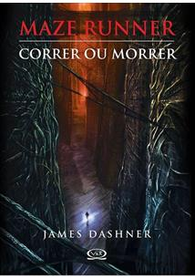
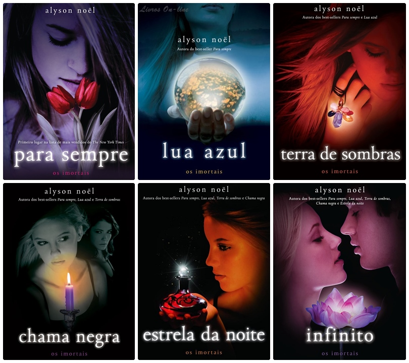
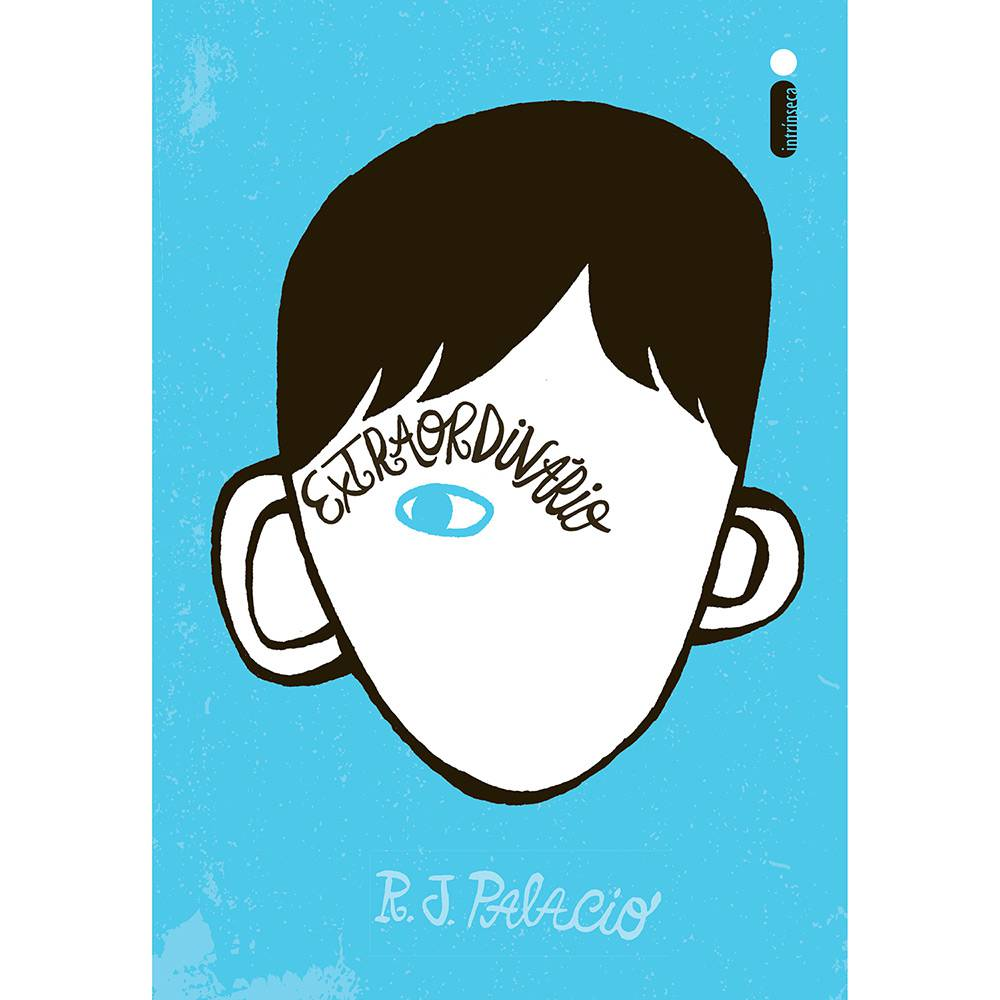
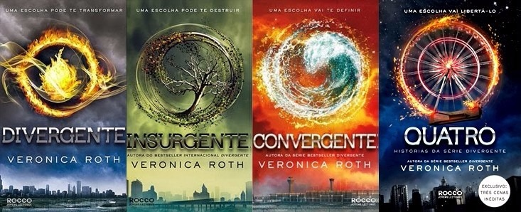
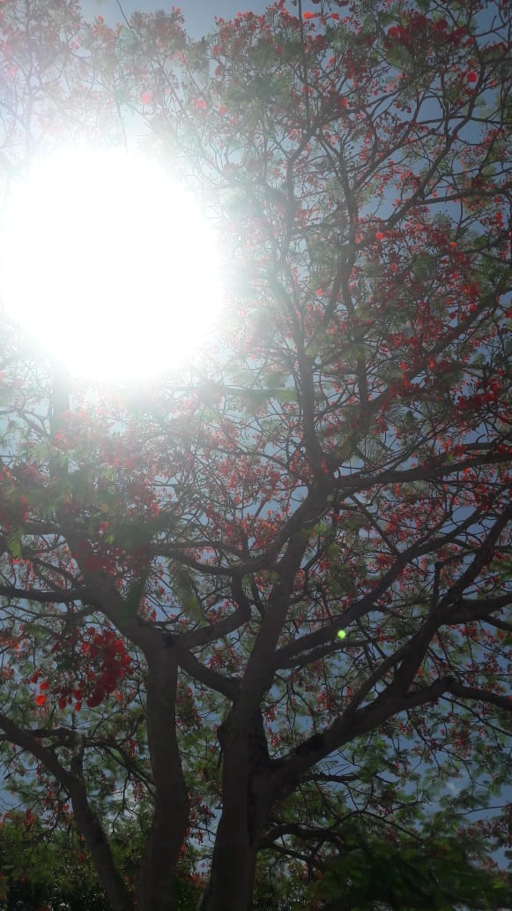
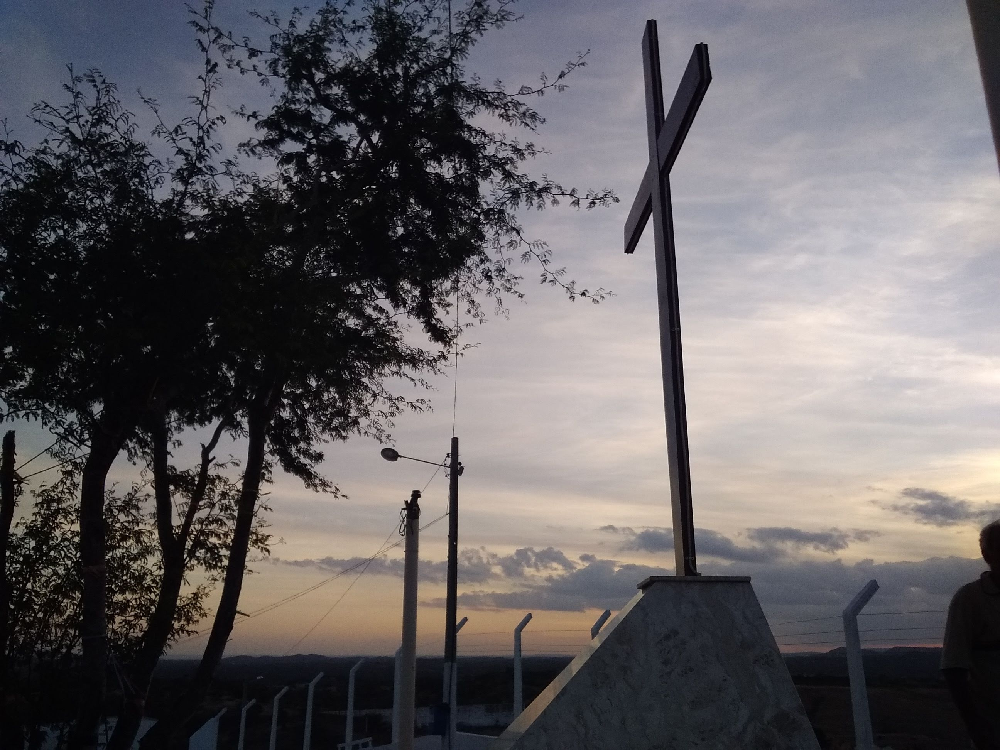

Eu sempre gostei muito de ler livros, desde os de ação e aventura (como "Maze Runner"), aos de romance (Como "Minha Vida Fora de Série"),e drama (Como "O Extreordinário"). Não me prendo a um único tipo de livro, pois para mim o que importa é a forma a qual ele foi escrito e o enrredo a história, se ela me chamar atenção, irei lê-la com toda certeza
Agora, algumas imagens de livros maravilhosos que já li e recomendo muito. Eu decidi colocar só alguns para não ficar tão extenso KKK
Maze Runner, Correr ou Morrer
Maze Runner, Prova de Fogo
Minha Vida Fora de Série
Trilogia de "Para Todos os Garotos Que Já Amei"
Série "Imortais"
O Extraordinário
Série de livros de "Divergente"
Outro hobbie meu que (infelizmente) não estou praticando por enquanto, é tirar fotos. Eu gosto bastante de tirar fotos de paisagens, árvores, do céu... Enfim, eu geralmente tiro elas quando estou feliz e encontro inspiração de alguma forma.
 Bom, acho que é só isso!